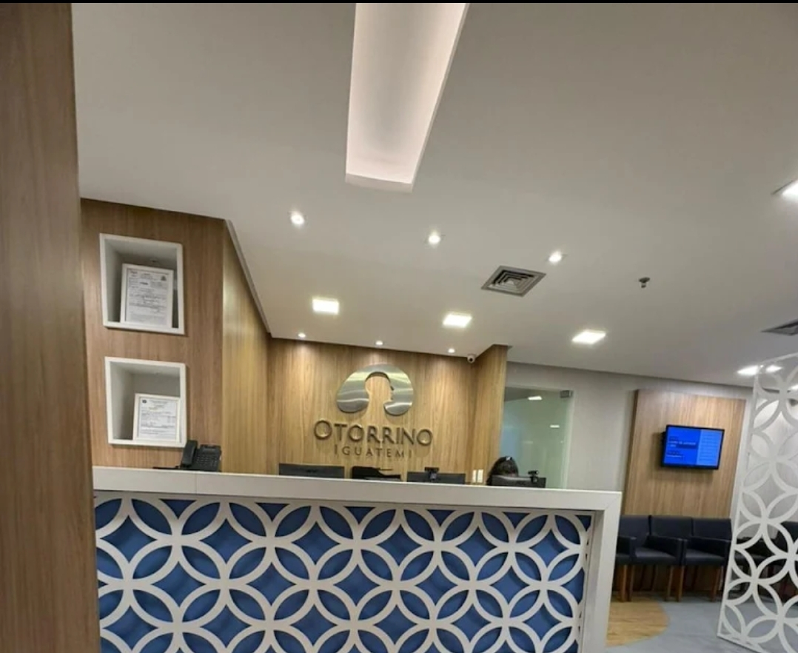

Dr. André Brandão
Sou médico otorrinolaringologista, com atuação em Otorrinolaringologia geral e foco em Medicina do Sono e cirurgias avançadas da via aérea.
Realizo atendimento de pacientes com doenças do ouvido, nariz e garganta, bem como com alterações relacionadas ao ronco, à apneia obstrutiva do sono e a outros distúrbios respiratórios do sono.
Minha prática é baseada em avaliação clínica cuidadosa, individualizada e fundamentada em evidências científicas, respeitando a necessidade específica de cada paciente, desde o tratamento clínico até as opções cirúrgicas.
Nos casos em que a cirurgia se mostra a melhor estratégia terapêutica, realizo procedimentos por meio de técnicas minimamente invasivas, incluindo cirurgias endoscópicas nasais e acessos transorais com o auxílio da cirurgia robótica.
Atendimento Humanizado
Cuidado individual e personalizado
Evidências Científicas
Tratamento baseado em estudos atualizados